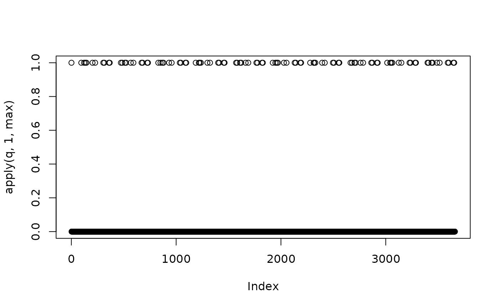

Allows to generate daily regressors (dummy variables) corresponding to each holiday of a pre-defined calendar.
Arguments
- calendar
The calendar in which the holidays are defined.
- start
Starting date for the regressors, format
"YYYY-MM-DD".- length
Length of the regressors in days.
- nonworking
Indexes of non working days (Monday=1, Sunday=7).
- type
Adjustment type when a holiday falls on a week-end:
"NextWorkingDay": the holiday is set to the next day,"PreviousWorkingDay": the holiday is set to the previous day,"Skip": holidays corresponding to non working days are simply skipped in the matrix,"All": (holidays are always put in the matrix, even if they correspond to a non working day.- single
Boolean indication if a single variable (
TRUE) should be returned or a matrix (FALSE, the default) containing the different holidays in separate columns.
Value
A matrix (class "matrix") where each column is associated to a holiday (in the order of creation of the holiday) and each row to a date.
Details
The pre-defined in a calendar has to be created with the functions national_calendar or weighted_calendar or
weighted_calendar. A many regressors as defined holidays are generated, when the holiday occurs
the value is 1 and 0 otherwise.
This kind of non-aggregated regressors are used for calendar correction in daily data.
References
More information on calendar correction in JDemetra+ online documentation: https://jdemetra-new-documentation.netlify.app/a-calendar-correction
Examples
BE <- national_calendar(list(
fixed_day(7,21),
special_day("NEWYEAR"),
special_day("CHRISTMAS"),
special_day("MAYDAY"),
special_day("EASTERMONDAY"),
special_day("ASCENSION"),
special_day("WHITMONDAY"),
special_day("ASSUMPTION"),
special_day("ALLSAINTSDAY"),
special_day("ARMISTICE")))
q<-holidays(BE, "2021-01-01", 366*10, type="All")
plot(apply(q,1, max))
